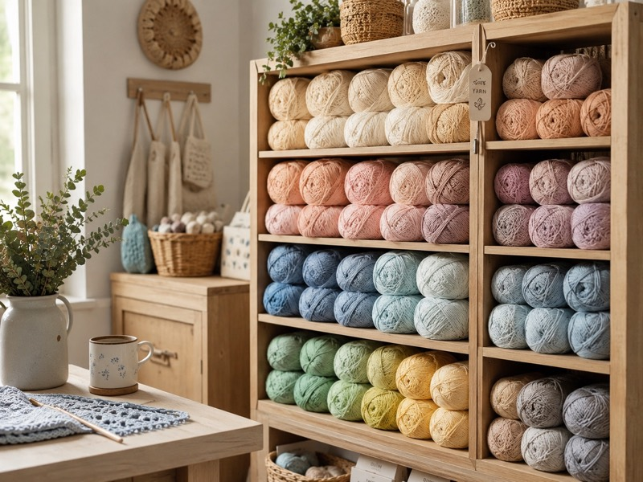
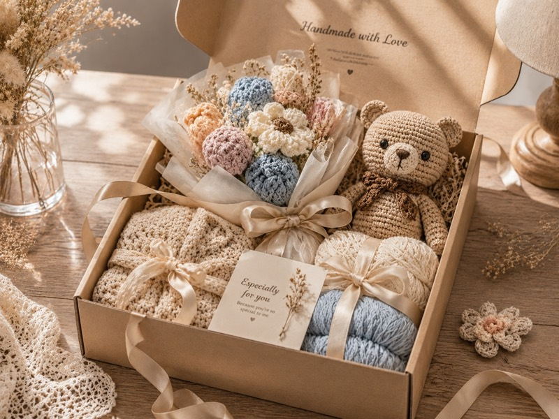

Vì sao quà len handmade ngày càng được yêu thích?
Một bài mở đầu nhẹ nhàng về giá trị của đồ len handmade và cảm giác ấm áp khi tặng quà làm bằng tay.
Đọc bàiGóc nhỏ cho hội mê len
Những bài viết nhẹ nhàng về quà len handmade, cách chọn len, chart móc len và vài mẹo nhỏ cho người mới bắt đầu.
Lọc nhanh
Một bài mở đầu nhẹ nhàng về giá trị của đồ len handmade và cảm giác ấm áp khi tặng quà làm bằng tay.
Đọc bài
Giải thích milk cotton, len nhung, cotton, acrylic và cách chọn kim móc theo từng sản phẩm.
Đọc bài
Giải thích quy trình custom thú len theo ảnh và những yếu tố ảnh hưởng đến thời gian hoàn thiện.
Đọc bài
Mẹo giữ thú len sạch, tránh bụi ẩm, nắng gắt và không bị mất form sau thời gian sử dụng.
Đọc bàiChưa có bài nào khớp với từ khóa này. Thử tìm quà len, người mới hoặc loại len khác nha.